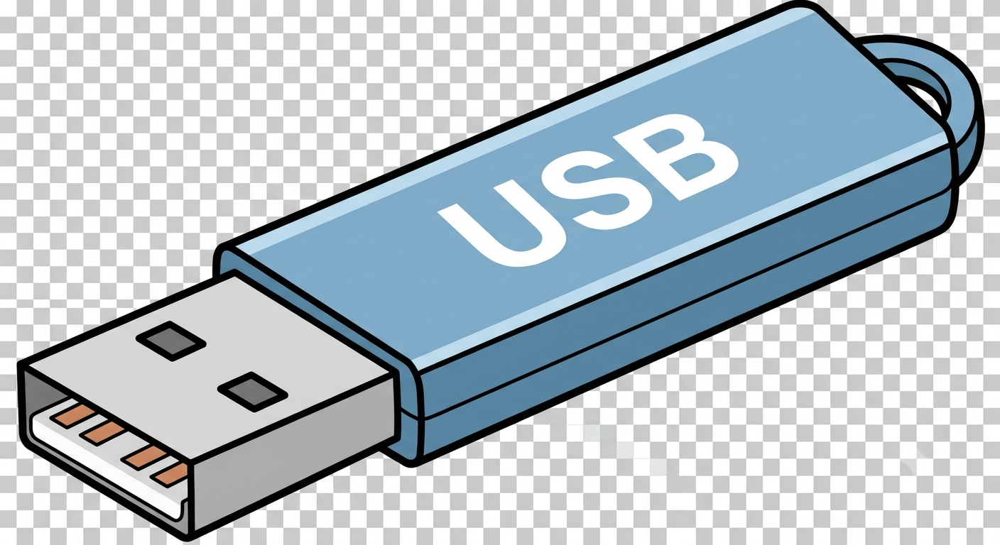

Scan the PC.
Not Windows.
SentinelUSB boots from a USB drive and gives you a clean place to inspect a Windows installation for malware and suspicious persistence.

It does one thing.
It gives you a bootable environment for looking at a potentially compromised Windows machine without depending on the Windows installation itself.
Boot from USB
Start the machine outside its installed operating system.
Read-only first
Windows volumes are mounted read-only by default during investigation.
Known malware
Use established scanning engines and detection rules rather than pretending to be a magical antivirus.
Persistence
Look for common startup folders, services, scheduled tasks and other persistence locations.
Offline capable
No cloud account or Internet connection is required for the basic rescue workflow.
Reports
Save findings as readable HTML and machine-friendly JSON.
Start here.
Download
Grab the latest ISO from GitHub.
Flash
Use balenaEtcher to write the ISO to a USB drive. The selected USB will be erased.
Boot
Boot the computer from that USB and launch SentinelUSB.
Why I made it.
I'm Phil Gonzales. SentinelUSB is a hands-on cybersecurity project built to be useful outside a classroom and simple enough to understand, modify and improve.
My portfolioKeep it free.
If SentinelUSB saves you a trip to a repair shop or you just want to support the project:
Donate on Venmo@aaephil